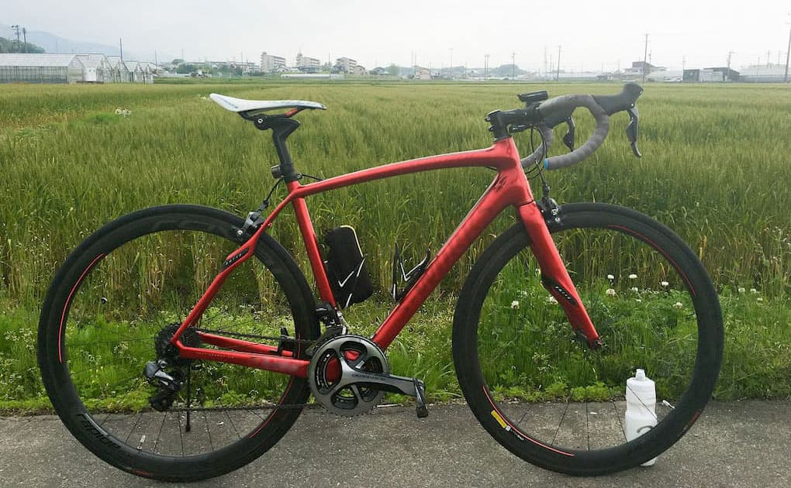
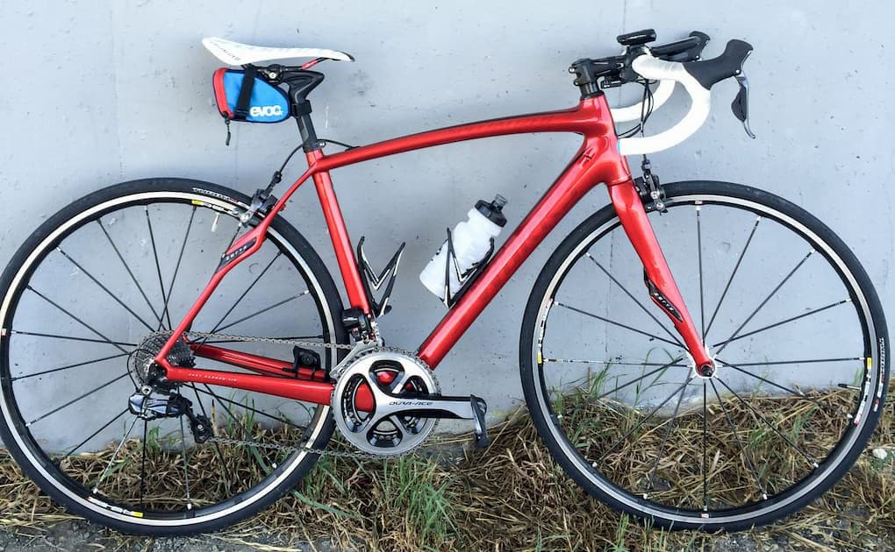

いろいろと自分のロードバイクも変遷してきましたが、今のスペシャライズドのルーベで落ち着いた感じがします。
スペックは、
- フレーム：Specialized S-works Roubaix SL4
- コンポーネント：Shimano Ultegra Di2（クランクだけDura Ace)
といった感じです。ROVALのカーボンクリンチャーホイールは軽くて平地は勿論のこと登坂ものんびり登る分には全く問題ありません。クリンチャーなのでパンクしても簡単にチューブ交換すれば再び走り出せるのでサドルバッグもかさばりません。見映えも良くて大変気に入っております。
サドルは今までスペシャライズドのToupeを使ってきましたがROMINに変えました。おしりに優しいボディジオメトリのサドルでオススメです。シートポストは付属でCobl-Goblで、こちらも衝撃を吸収してくれる独特な形状をしております。ハンドルもタイヤもスペシャライズドです。別に揃えるつもりはなかったのですが、スペシャライズドのカーボンハンドルはコストパフォーマンス抜群ですし、タイヤもS-works Turboと僕との相性が良いので使っています。
S-works Roubaix SL4は長距離走っても身体が凄く疲れるという事はあまり無いです。筋肉痛とかはなりますけどね。まぁそんなに追い込むほど乗っていないというのがありますが…。
そんな訳で自慢の愛車となり、長く乗り続けていきたいと思っています。

